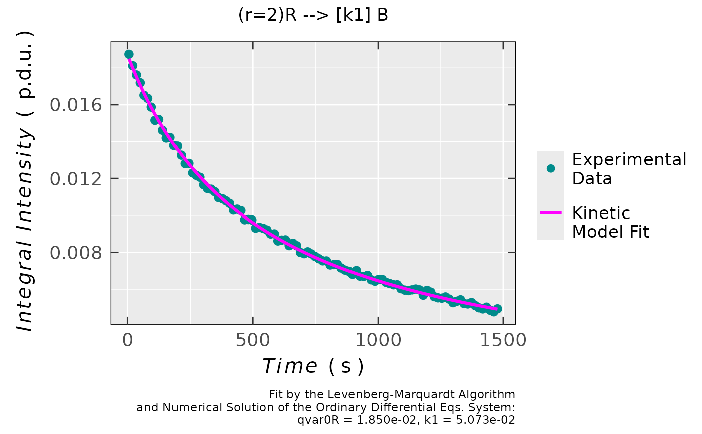
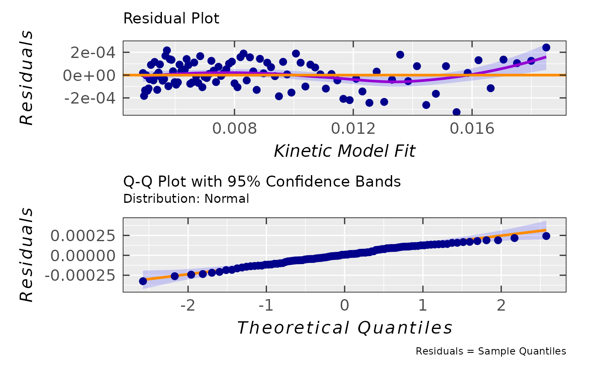
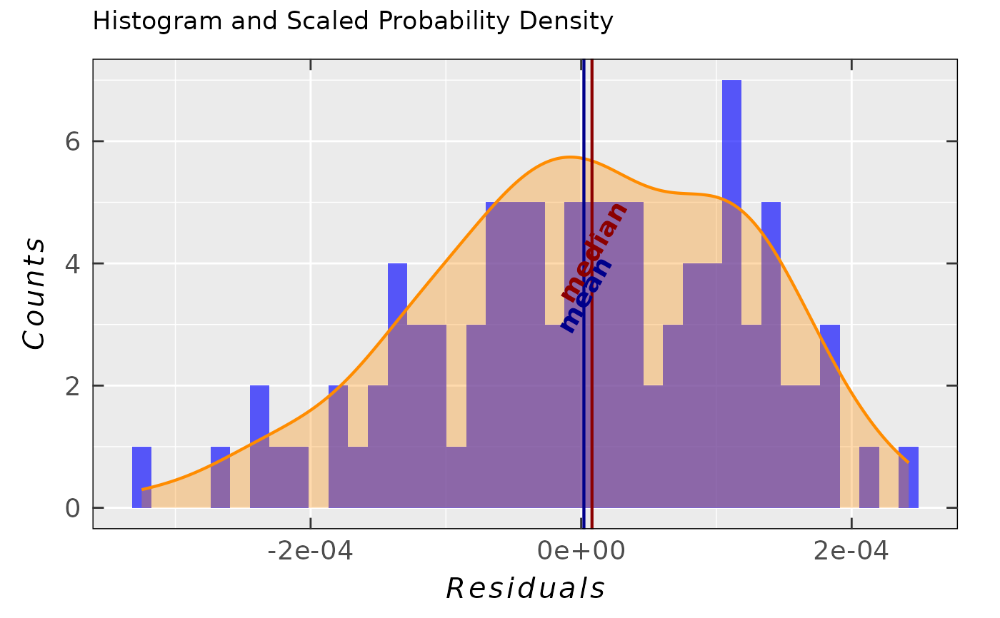
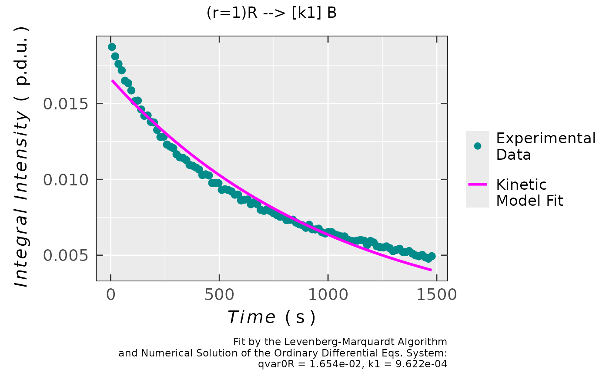
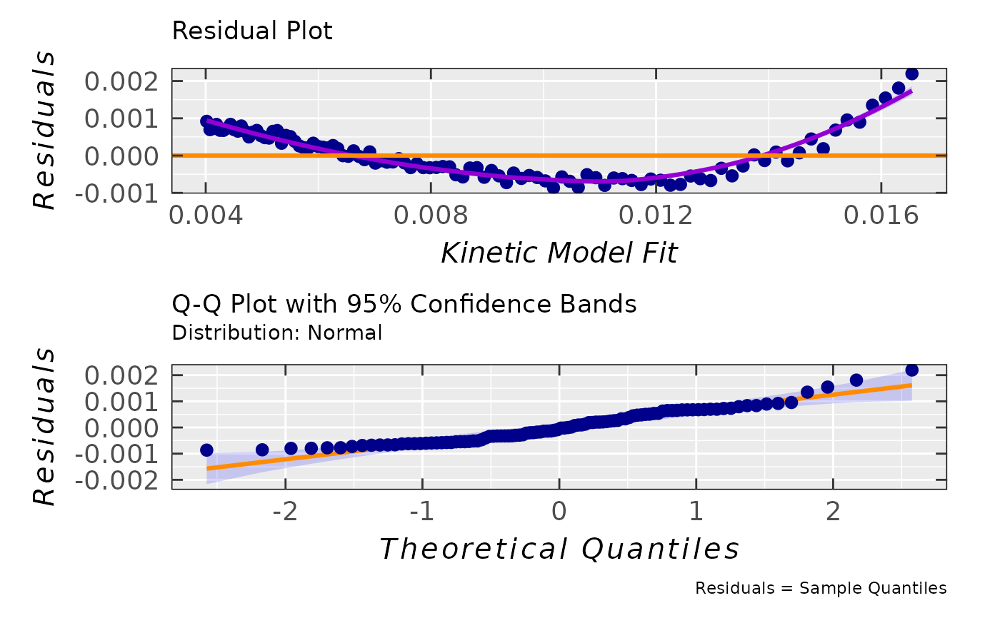

Radical Kinetic Models Fitted onto Experimental Data
Source:R/eval_kinR_EPR_modelFit.R
eval_kinR_EPR_modelFit.RdFitting of the integrals/areas/concentration/...etc. vs time relation (either from experiment
or from integration of the EPR spectral time series) in order to find the kinetic parameters
(like rate constant, \(k\) as well as (partial) reaction order(s)) of proposed radical reaction.
Reaction model is taken from the eval_kinR_ODE_model, while the optimization/fitting
is provided by the differential Levenberg-Marquardt optimization method, nls.lm.
Because the radical concentration is directly proportional to the EPR spectrum (double)
integral (see the quantify_EPR_Abs), for a quick evaluation and/or comparison of different
kinetic data, it is possible to obtain the rate constants (\(k\)) by the integrals/areas vs time fit.
Therefore, the unit of \(k\) is expressed in terms of \(\text{s}^{-1}\) as well as in units of integrals/areas,
e.g. procedure defined unit (see p.d.u.),
depending on the order of reaction (see the params.guess argument).
Usage
eval_kinR_EPR_modelFit(
data.qt.expr,
time.unit = "s",
time = "time_s",
qvarR = "Area",
model.react = "(r=1)R --> [k1] B",
elementary.react = TRUE,
params.guess = c(qvar0R = 0.001, k1 = 0.001),
params.guess.lower = NULL,
params.guess.upper = NULL,
fit.kin.method = "diff-levenmarq",
solve.ode.method = "lsoda",
time.frame.model = 2,
time.correct = FALSE,
path_to_dsc_par = NULL,
origin = NULL,
...
)Arguments
- data.qt.expr
A data frame object, containing the concentrations/integral intensities/areas under the EPR spectra calculated using the experimental data as well as time column. These two essential columns are described by character strings like those below (see arguments
timeandqvarR).- time.unit
Character string, corresponding to time unit like
"s"(default),"min"or"h".- time
Character string, pointing to
timecolumn/variable name in the originaldata.qt.exprdata frame. Default:time = "time_s".- qvarR
Character string, pointing to
qvarR(quantitative variable related to radical) column/variable name in the originaldata.qt.expr. Default:qvarR = "Area".- model.react
Character string, denoting a specific radical (
"R") reaction related to changes in integral intensities (or any other quantitative variable) in EPR spectral time series. Arrow shows direction of the reaction ("-->", forwardor"<==>", forward + reverse). Rate constants are indicated by square brackets after the arrows. Following examples of the reaction schemes are predefined and commonly used to describe the integral intensity and/or radical concentration/amount changes during the EPR time series experiment (ther,a,bstoichiometric coefficients may vary, see below).Reaction Scheme model.react \((r=1)\text{R} \xrightarrow{k_1} \text{B}\) "(r=1)R --> [k1] B"\((a=2)\text{A} \xrightarrow{k_1} (r=2)\text{R}\) "(a=2)A --> [k1] (r=2)R"\((a=2)\text{A} \xrightleftharpoons[k_4]{k_1} (r=2)\text{R} \xrightleftharpoons[k_3]{k_2} (b=1)\text{B}\) "(a=2)A <==> [k1] [k4] (r=2)R <==> [k2] [k3] (b=1)B"\((r=1)\text{R} \xrightleftharpoons[k_2]{k_1} (b=1)\text{B}\) "(r=1)R <==> [k1] [k2] (b=1)B"\((a=2)\text{A} \xrightleftharpoons[k_2]{k_1} (r=2)\text{R}\) "(a=2)A <==> [k1] [k2] (r=2)R"\((a=1)\text{A} + (b=1)\text{B} \xrightarrow{k_1} (r=1)\text{R}\) "(a=1)A + (b=1)B --> [k1] (r=1)R"\((a=1)\text{A} + (r=1)\text{R} \xrightarrow{k_1} \text{B}\) "(a=1)A + (r=1)R --> [k1] B"Couple of examples are also given in
Details. The function is relatively flexible and enables later addition of any other reaction schemes describing the EPR time series experiments (YOU MAY ASK DEVELOPER(S) via forum/help-channels). The stoichiometric coefficient (such as(r=1)or(a=1)) can be varied within themodel.reactcharacter string. Defined/Allowed values are integers, e.g. 1,2,3...etc. The space character within themodel.reactstring is not fixed and can be skipped for the sake of simplicity. Ifelementary.react = FALSE(the model reaction is not considered as an elementary one), a possible non-integer partial coefficients (e.g.alpha,betaorgamma) must be included inkin.params(see alsokin.paramsdescription). For the consecutive model reaction presented above, it applies only to one part/step of the mechanism.- elementary.react
Logical, if the model reaction should be considered as elementary one, i.e. the stoichiometric coefficients equal to the partial reaction orders. Such reaction proceeds without identifiable intermediate species forming. Default:
elementary.react = TRUE. Ifelementary.react = FALSE, i.e. themodel.reactcannot be considered like an elementary one, one must include the parameterized reaction orders \(\alpha\), \(\beta\) or \(\gamma\) in thekin.params, e.gkin.params = c(k1 = 0.01, qvar0A = 0.05, alpha = 1.5). For the consecutive model reaction presented above, it applies only to one part/step of the mechanism.- params.guess
Named vector, initial values of
kin.params(seeeval_kinR_ODE_model) ready for optimization/fitting. Thek1-unit is eventually expressed in terms of \(s^{-1}\) as well as in units of the appliedqvar(e.g.c, concentration) and depends on the partial reaction order(s), which power(s) theqvar(s). For example, thek1-unit of elementary radical recombination, evaluated by double integrals, likemodel.react = "(r=2)R --> [k1] B", reads: \(\text{s}^{-1}\,(\text{p.d.u.})^{-1}\).- params.guess.lower
Numeric vector of lower bounds on each parameter in
params.guess. If not given, the default (params.guess.lower = NULL) lower bound corresponds to-Infof eachparams.guesscomponent.- params.guess.upper
Numeric vector of upper bounds on each parameter in
params.guess. If not given, the default (params.guess.upper = NULL) upper bound corresponds to+Infof eachparams.guesscomponent.- fit.kin.method
Character string, pointing to optimization/fitting method. So far, the default one (
fit.kin.method = "diff-levenmarq") is exclusively used (additional methods are planned). It corresponds to differential Levenberg-Marquardt (see alsonls.lm) because it is based on the numeric solution of the ordinary differential equations and not on the common integration of rate equations.- solve.ode.method
Character string, setting up the integrator (the
methodargument inode), applied to find the numeric solution of ODE. Default:solve.ode.method = "lsoda"(lsoda, additional methods, see theodelink above).- time.frame.model
Numeric value, corresponding to interval time resolution, i.e. the smallest time difference between two consecutive points. The number of points is thus defined by the
time.interval.modelargument: $$((Interval[2] - Interval[1])\,/\,Frame) + 1$$ This argument is required to numerically solve the kinetic differential equations by theode. For the default interval mentioned above, the default value readstime.frame.model = 2(in seconds).- time.correct
Logical, if time of recorded series of the EPR spectra needs to be corrected. Default:
time.correc = FALSE, which actually assumes that time correction was done (either bycorrect_time_Exp_Specsor byreadEPR_Exp_Specs_kinwith a subsequent integration), prior to fitting procedure. Iftime.correct = TRUE, thepathto file with EPR instrumental parameters (like.DSC/.dscorpar) must be defined (see thepath_to_dsc_par).- path_to_dsc_par
Character string, path (also provided by the
file.path) to.DSC/.dscor.par(depending onoriginparameter)textfiles including instrumental parameters and provided by the EPR machine. Default:path_to_dsc_par = NULL.- origin
Character string, corresponding to software which was used to acquire the EPR spectra, essential to load the parameters by the
path_to_dsc_par(see also thereadEPR_params_slct_kin). Two origins are available:origin = "winepr"ororigin = "xenon".- ...
additional arguments for
nls.lm, e.g. defined by thecontrol = minpack.lm::nls.lm.control().
Value
List with the following components is available:
- df
Data frame object with the variables/columns such as
time, experimental quantitative variable likesigmoid_Integ(sigmoid integral) orArea, concentrationc_Mor number of radicals of the relevant EPR spectrum; the corresponding quantitative variablefittedvector values as well as residual vector (experiment - kinetic model) related to theqvarRargument.- plot
Plot object Quantitative variable vs Time with the experimental data and the corresponding fit.
- ra
Simple residual analysis - a list consisting of 4 elements: diagnostic plots
plot.rqq,plot.histDens; original data frame (df) with residuals and their corresponding standard deviation (sd). For details, please refer to theplot_eval_RA_forFit.- df.coeffs
Data frame object containing the optimized (best fit) parameter values (
Estimates), their correspondingstandard errors,t-as well asp-values.- N.evals
Total number of evaluations/iterations before the best fit is found.
- min.rss
Minimum sum of residual squares after
N.evals.- abic
A list consisting of Akaike and Bayesian information criteria (AIC & BIC) vector (
abic.vec) andmessage, denoting the probability distribution of residuals/errors, applied to evaluate those criteria. To be used when comparing different kinetic models. The lower the (negative) values, the better the fit. Please, refer to theeval_ABIC_forFit.- N.converg
Vector, corresponding to residual sum of squares at each iteration/evaluation.
References
Mullen KM, Elzhov TV, Spiess A, Bolker B (2023). “minpack.lm.” https://github.com/cran/minpack.lm.
Gavin HP (2024). “The Levenberg-Marquardt algorithm for nonlinear least squares curve-fitting problems.” Department of civil and environmental engineering, Duke University, https://people.duke.edu/~hpgavin/ce281/lm.pdf.
See also
Other Evaluations and Quantification:
eval_integ_EPR_Spec(),
eval_kinR_ODE_model(),
quantify_EPR_Abs(),
quantify_EPR_Norm_const()
Examples
## loading example data (incl. `Area` and `time` variables)
## from Xenon: decay of a triarylamine radical cation
## after its generation by electrochemical oxidation
triaryl_radCat_path <-
load_data_example(file = "Triarylamine_radCat_decay_a.txt")
## corresponding data (double integrated
## EPR spectrum = `Area` vs `time`)
triaryl_radCat_data <-
readEPR_Exp_Specs(triaryl_radCat_path,
header = TRUE,
fill = TRUE,
select = c(3,7),
col.names = c("time_s","Area"),
x.unit = "s",
x.id = 1,
Intensity.id = 2,
qValue = 1700,
data.structure = "others") %>%
na.omit()
## data preview
head(triaryl_radCat_data)
#> time_s Area
#> <num> <num>
#> 1: 0.00 0.018741176
#> 2: 15.17 0.018117647
#> 3: 30.01 0.017617647
#> 4: 44.82 0.017194118
#> 5: 59.66 0.016511765
#> 6: 74.52 0.016347059
#
## loading the `.DSC` file
triaryl_radCat_dsc_path <-
load_data_example(file = "Triarylamine_radCat_decay_a.DSC")
#
## fit previous data by second order kinetics,
## where the `model.react` is considered as an elementary
## step (`time.correct` of the CW-sweeps is included (`TRUE`))
triaryl_model_kin_fit_01 <-
eval_kinR_EPR_modelFit(data.qt.expr = triaryl_radCat_data,
model.react = "(r=2)R --> [k1] B",
elementary.react = TRUE,
params.guess = c(qvar0R = 0.019,
k1 = 0.04
),
time.correct = TRUE,
path_to_dsc_par = triaryl_radCat_dsc_path,
origin = "xenon")
## data frame preview
head(triaryl_model_kin_fit_01$df)
#> time_s Area fitted residuals
#> <num> <num> <num> <num>
#> 1: 6 0.018741176 0.018498974 0.00024220227
#> 2: 21 0.018117647 0.017992445 0.00012520241
#> 3: 36 0.017617647 0.017512916 0.00010473112
#> 4: 51 0.017194118 0.017058284 0.00013583347
#> 5: 66 0.016511765 0.016626659 -0.00011489474
#> 6: 81 0.016347059 0.016216338 0.00013072040
#
## plot preview
triaryl_model_kin_fit_01$plot

#
## coefficients/parameters table preview
triaryl_model_kin_fit_01$df.coeffs
#> Estimate Std. Error t value Pr(>|t|)
#> qvar0R 0.018498974 4.4370112e-05 416.92422 4.9868274e-161
#> k1 0.050727647 1.9521465e-04 259.85573 6.3237953e-141
#
## convergence preview
triaryl_model_kin_fit_01$N.converg
#> [1] 1.2424078e-04 2.8726168e-06 1.3678869e-06 1.3672908e-06 1.3672908e-06
#
## simple residual analysis plots
## showing the random pattern, which indicates that
## kinetic model provides a decent fit to the data +
## normal quantile (Q-Q) plot, indicating that residuals
## are normally distributed; third plot demonstrates
## the probability density with the histogram of residuals
triaryl_model_kin_fit_01$ra$plot.rqq

triaryl_model_kin_fit_01$ra$plot.histDens

#
## standard deviation of residuals
triaryl_model_kin_fit_01$ra$sd
#> [1] 0.00011872565
#
## Akaike and Bayesian Criteria (AIC & BIC)
## information about the residuals +
## + probability distribution
triaryl_model_kin_fit_01$abic
#> $abic.vec
#> [1] -1522.9038 -1517.8172
#>
#> $message
#> [1] "Information criteria evaluated using the"
#> [2] "normal distribution of residuals,"
#> [3] "additionally supported by the Shapiro-Wilk"
#> [4] "test."
#>
#
## take the same experimental data and perform fit
## by first order kinetics where the `model.react`
## is considered as an elementary step
## (`time.correct` of the CW-sweeps is included (`TRUE`))
triaryl_model_kin_fit_02 <-
eval_kinR_EPR_modelFit(data.qt.expr = triaryl_radCat_data,
model.react = "(r=1)R --> [k1] B",
elementary.react = TRUE,
params.guess = c(qvar0R = 0.019,
k1 = 0.0002
),
time.correct = TRUE,
path_to_dsc_par = triaryl_radCat_dsc_path,
origin = "xenon")
## plot preview
triaryl_model_kin_fit_02$plot

#
## coefficients/parameters table preview
triaryl_model_kin_fit_02$df.coeffs
#> Estimate Std. Error t value Pr(>|t|)
#> qvar0R 0.01654454027 1.6924636e-04 97.754187 1.6868359e-99
#> k1 0.00096215125 1.8497324e-05 52.015701 3.5037066e-73
#
## simple residual analysis, indicating
## the 1st order kinetics is less convenient
## model than that of the 2nd order (based on
## the decrease of EPR intensity/integral)
triaryl_model_kin_fit_02$ra$plot.rqq

#
## standard deviation of residuals
triaryl_model_kin_fit_02$ra$sd
#> [1] 0.00063538776
#
## Akaike and Bayesian Criteria (AIC & BIC) +
## + information about the residuals
## probability distribution
triaryl_model_kin_fit_02$abic
#> $abic.vec
#> [1] -1187.8203 -1182.7336
#>
#> $message
#> [1] "Information criteria evaluated using the"
#> [2] "normal distribution of residuals."
#>